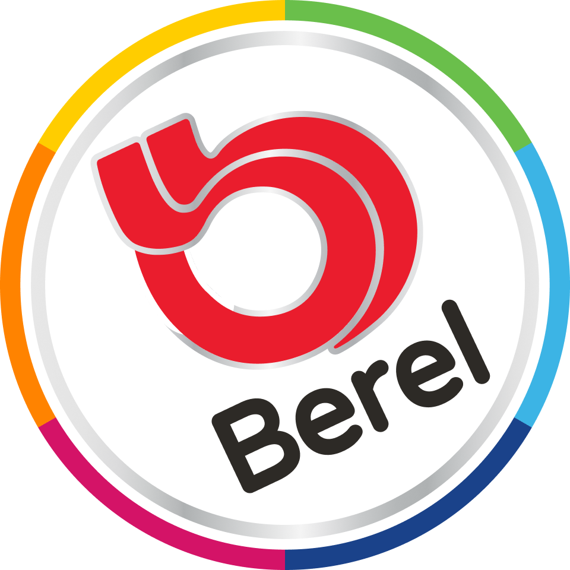
Berel
Transforming the way people choose and use color
Background
The existing website was outdated and did not meet current user needs. The challenge was to expand the product catalog, integrate rich technical content, and make color selection easier.
Goal
Create an engaging, inspirational, and functional platform that serves both novice and professional users.
My role as Lead UX Designer
Responsible for the end-to-end UX strategy, research, information architecture, prototyping, and validation.
Key deliverables
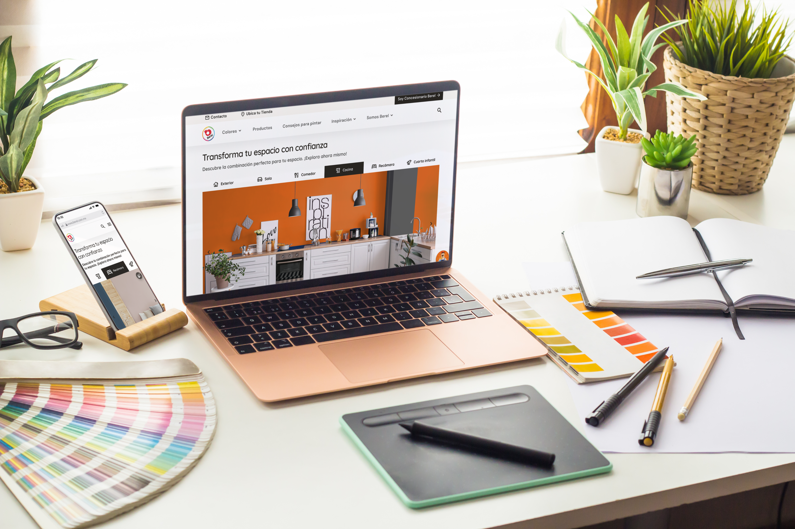
Understanding the customer base
We conducted 15 user interviews to gain a deep, qualitative understanding of Berel's customers and the decisions they make when choosing products.
Customer segmentation
Four profiles emerged: Industrial, Professional, Trade, and Individual. Each group had distinct consumption patterns and digital needs.
Strategic findings
These findings became the foundation for user personas, journey maps, and a feature strategy aligned with business value.
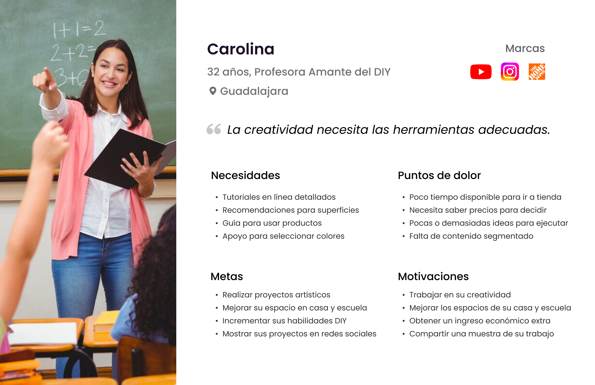
Designing for different ways of choosing color
The research translated complex needs into actionable requirements and helped prioritize features with the highest user and business value.
Industrial profile
This high-volume segment prioritizes speed, reliability, and technical precision. Contractors traditionally bypassed the website to engage with distributors directly.
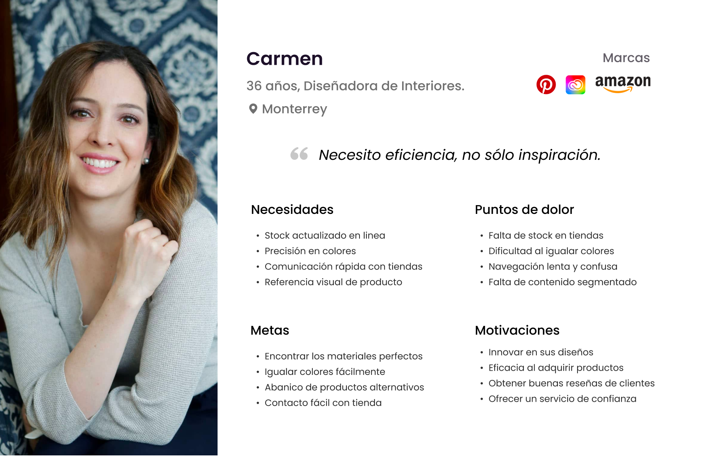
Feature prioritization
- Quick access to technical data: clear nomenclature, product comparison, and technical sheets.
- Seamless logistics: store visibility connected to product availability and special orders.
- Dedicated support: Berel representative appointments for projects and quotes.
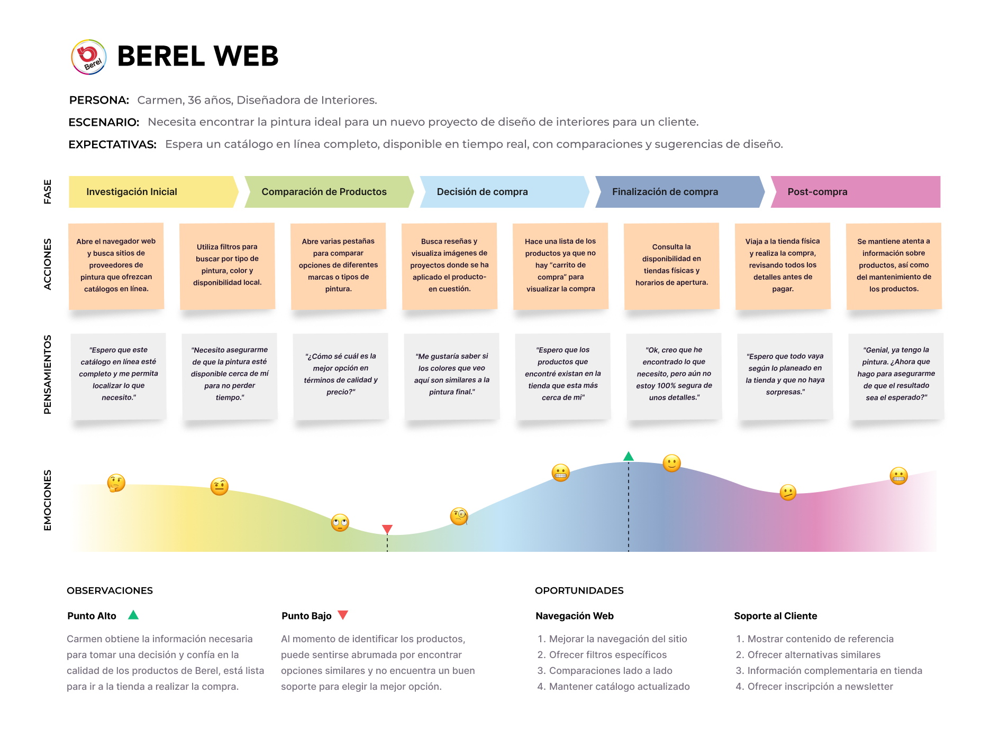
Finding opportunities for differentiation
We assessed five best-in-class industry competitors to understand their strategies, user flows, and inspirational content.
Competitive best practices
- Color and visual experience: inspiration, personalized color tools, and complete color information.
- Utility and transactional flows: responsive search, calculators, product comparison, and store findability.
- Multi-channel support: logistics, educational content, and accessible support.
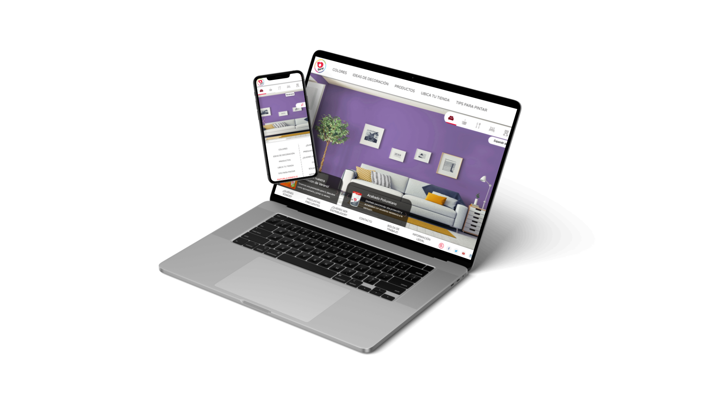
Building the structural foundation
I defined a streamlined navigation system and a robust information architecture that integrated the expanded catalog and new product tools across desktop and mobile.
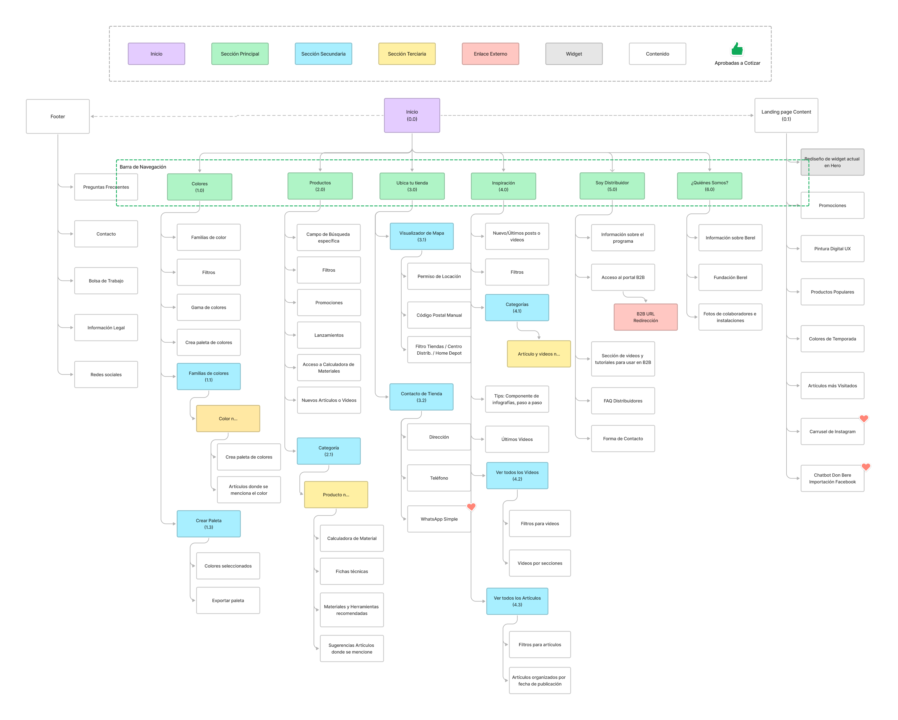
A modern and minimalist approach
The selected direction used a clean white and black palette accented by Berel Red, putting product imagery, application photos, and color swatches at the center.
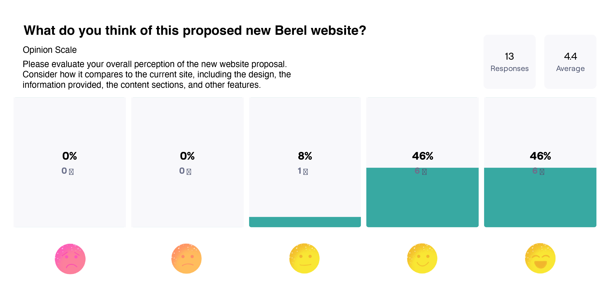
Making the experience tangible
Detailed desktop and mobile mockups brought the design system and validated information architecture together in an interactive prototype.
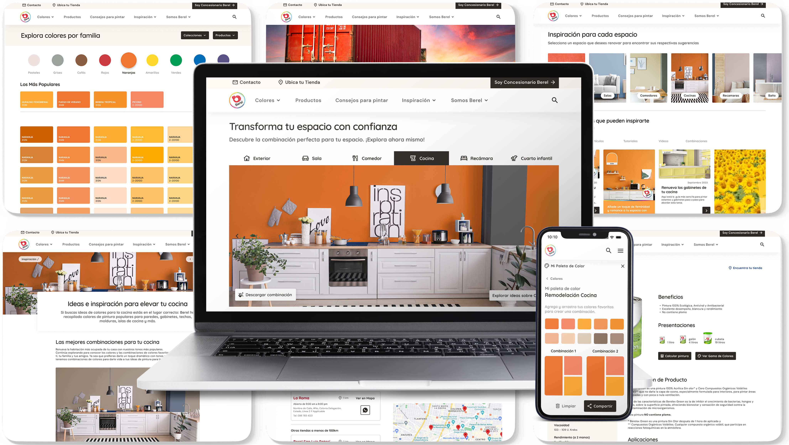
Validating the final direction
Usability testing with 13 participants validated the core tasks, product discovery, color selection, and the clarity of the new interface.
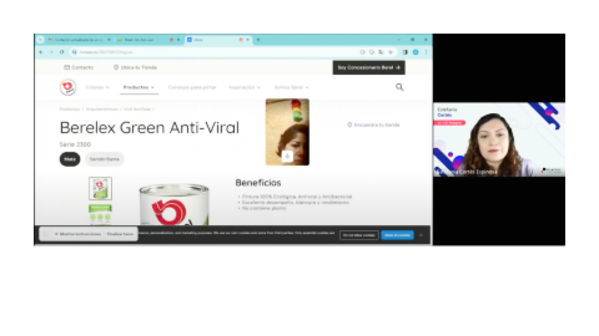
Designing for measurable confidence
The redesign made product discovery, technical decision-making, and color exploration easier to evaluate and improve across channels.
Higher clarity
Product information, benefits, and application guidance are organized around the decisions users need to make.
More useful tools
Color visualization, calculators, comparison, and store discovery connect inspiration with action.
Extending the experience to mobile
The validated design system and information architecture became the foundation for a mobile application with AI-powered visualization, color detection, saved palettes, and the materials calculator.
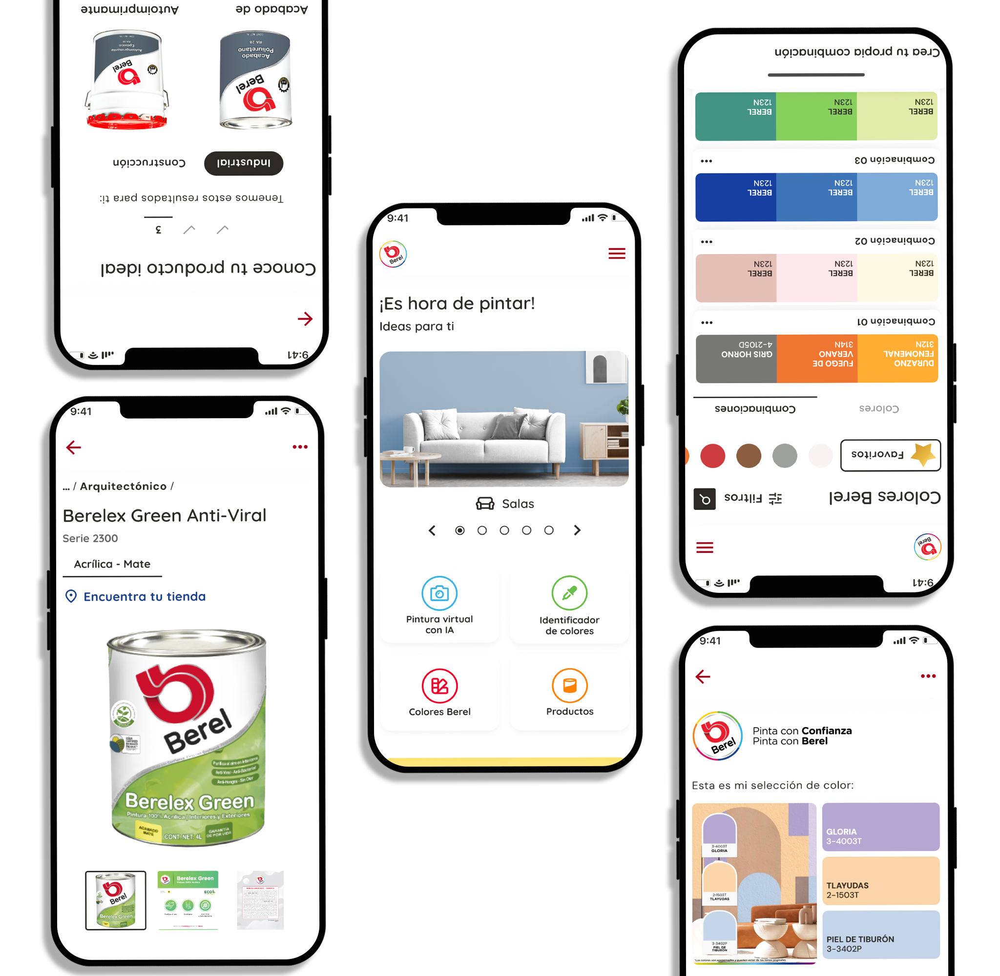